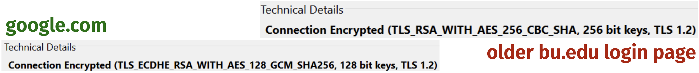
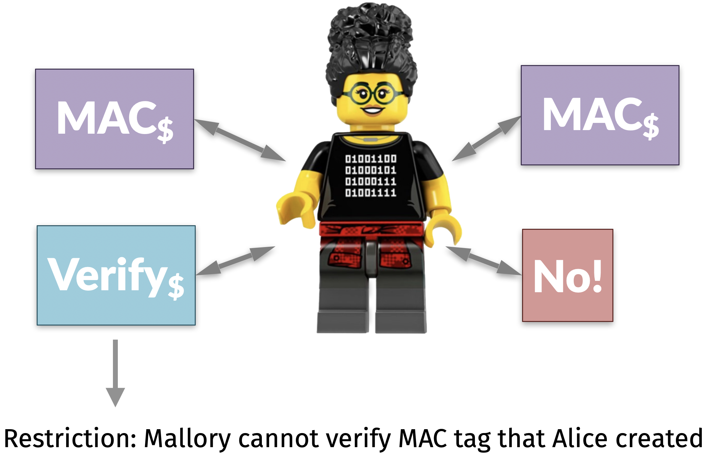
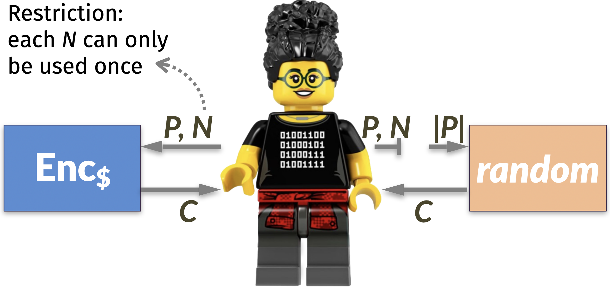
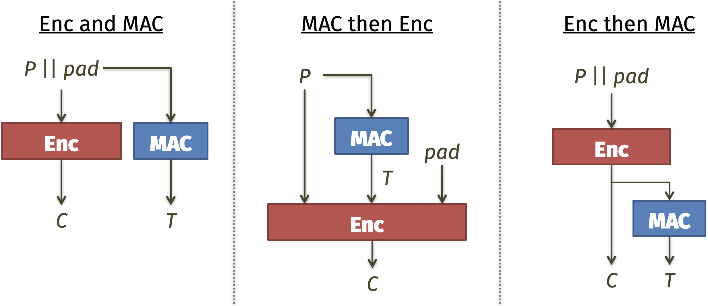
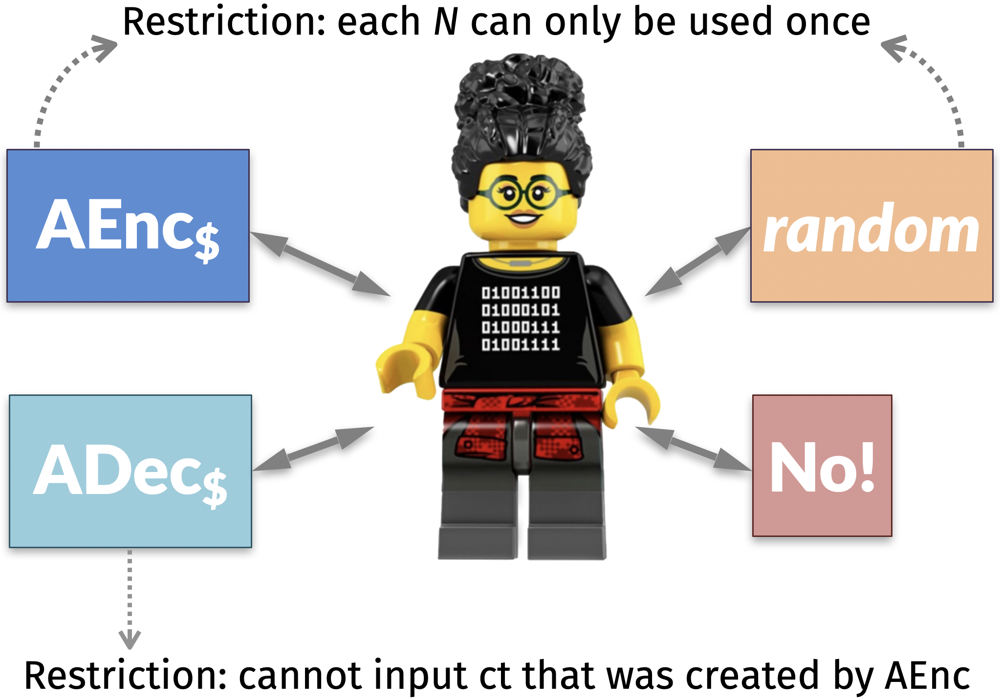
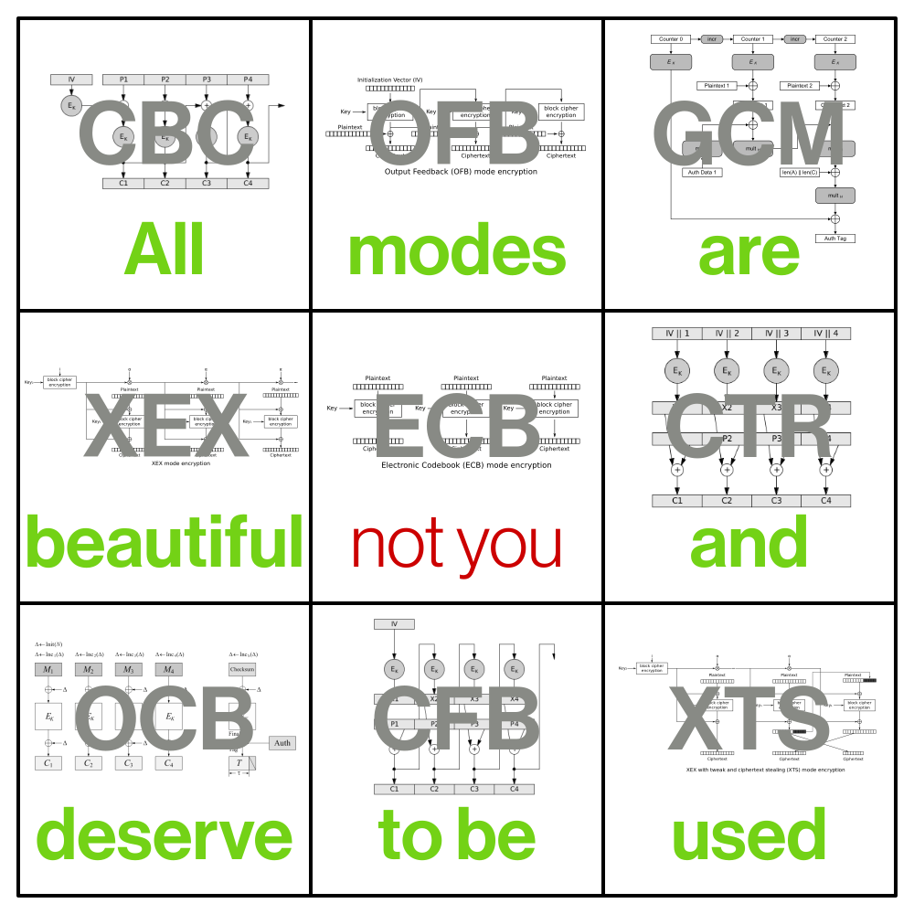
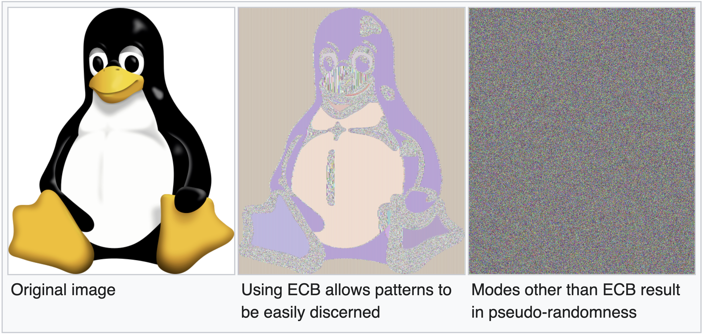
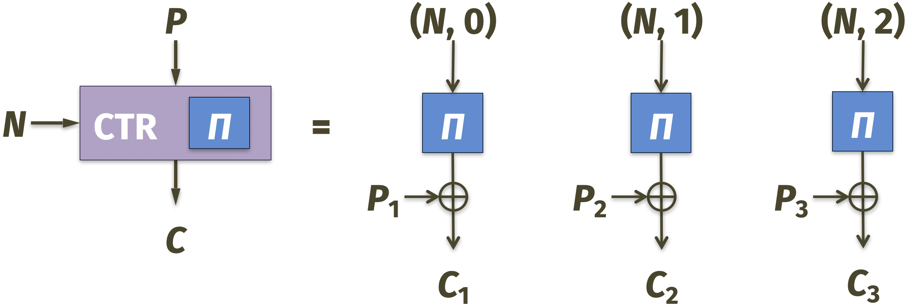

Dec\({}_k(c, n) \to p\): recovers the original plaintext message \(p\)
We require that Enc and Dec are “inverses” in the sense that \(\texttt{Dec}_k( \text{Enc}_k(p, n), n)= p\) for all keys \(k\), plaintexts \(p\), and nonces \(n\).
Note that \(|c| \geq |p|\) as a consequence. Many constructions satisfy \(|c| = |p|\).
Real-or-random security

Comparing crypto primitives used in google.com and bu.edu in 2017
In practice:
Sponge functions are not used often, since they are relatively new
The most common way to generate a synthetic keystream is to use AES with Counter Mode (which we will study later today)
So that we can evaluate if we have done a good job, let’s define a requirement for an encryption scheme to be declared “secure.”
For context, recall that EU-CMA was defined using a thought experiment in which honest Alice plays a game with the adversary Mallory.

EU-CMA security game
Let’s design a thought experiment for encryption. Remember that now our goal is confidentiality, not integrity.
Definition 14.2 (ROR-CPA) A symmetric encryption scheme is real-or-random indistinguishable under a chosen plaintext attack if Mallory cannot distinguish between real ciphertexts (for plainexts of her choice) and random data of the same length.

ROR-CPA security game
It is possible to show that our sponge construction achieves ROR-CPA if the function \(f\) acts like a random permutation. In fact, it achieves a stronger claim:
An adversary who does not know the key \(k\), but who may have observed part of an key stream, cannot predict key streams for that key it has not observed.
Symmetric encryption addresses the first two limitations of a one-time pad.
The symmetric key \(k\) must be as long as the plaintext message \(p\)
Reusing the same key for two or more messages breaks security
14.2 Authenticated encryption
Let’s address the last limitation of a one-time pad.
While it is safe against a passive eavesdropper Eve, an active attacker Mallory can manipulate the ciphertext in transit
To fix this problem, we will also use a message authentication code to detect if Mallory changes data in transit. In other words: because symmetric encryption and MACs are so useful (and fast!) to solve their respective problems, it is common to use them together.
“Confidentiality xor authenticity is not possible. If you don’t have both, often you don’t have either.”
– Prof. Matthew Green (Johns Hopkins)
So for convenience, let’s construct a combined primitive called authenticated encryption that performs both tasks together.
ROR-CPA security game
EU-CMA security game
Interactive question. Suppose there is a plaintext message \(p\) that we want to be confidential and authenticated. What is the best way to combine encryption and MACs?
Enc and MAC
MAC then Enc
Enc then MAC

Generically combining encryption with MACs (ignoring the nonce for now)
Answer. Let’s consider this question in two parts.
In general, a MAC does not claim to provide data confidentiality, so option A is incorrect
To distinguish between options B and C, use the cryptographic doom principle
“If you have to perform any cryptographic operation before verifying the MAC on a message you’ve received, it will somehow inevitably lead to doom!”
– Moxie Marlinspike
So the correct answer is C. Using Enc-then-MAC, we can make authenticated encryption by combining:
any symmetric key encrytion scheme (like AES with Counter Mode)
any message authentication code (like HMAC)
Defining AEAD
In general, suppose that the sender Alice has:
Data \(p\) that she wants to be confidential and authenticated
Associated data \(a\) that she only wants to be authenticated
Nonce \(n\) (sometimes also called the initialization vector)
Definition 14.3 (AEAD)Authenticated encryption with associated data contains three operations:
KeyGen: randomly choose \(k\), as usual
AEnc\({}_k(p, a, n)\): produces a combined ciphertext/tag \(ct\) of length \(|ct| > |p|\)
ADec\({}_k(ct, a, n)\): returns the original plaintext message \(p\) or an error message
The AEAD security game combines secrecy of an encryption scheme with unforgeability of a MAC. The simplest way to explain it is via the following thought experiment: Mallory cannot tell the difference between the two sides of this picture.

AEAD security game
Why should we combine authentication and encryption?
Example 2 (GMAC). The most popular MAC used to protect data on the Internet is called the Galois Message Authentication Code.
It is based on ideas from coding theory, although I won’t get into the details here
When combined with AES in Counter Mode, the resulting authenticated encryption is called AES with Galois/Counter mode, or AES-GCM
Comparing crypto primitives used in google.com and bu.edu in 2017
14.3 Advanced Encryption Standard
The Advanced Encryption Standard (AES) is… not an encryption scheme. (Oops.) Nevertheless, it is a very useful tool that is often used in encryption.
It was designed by Joan Daemen and Vincent Rijmen in the 1990s (before sponge functions existed)
It won a NIST competition (among 15 total entries) to be named as the pseudorandom permutation used by the U.S. federal government
“This Standard may be used by federal agencies to protect information when they have determined that encryption is appropriate.”
– NIST Federal Information Processing Standards (FIPS) publication 197, “Announcing the Advanced Encryption Standard (AES)” (link)
Block cipher
AES is a block cipher, which is a family of pseudorandom permutations \(B_k: \{0, 1\}^n \to \{0, 1\}^n\).
For each \(B_k\), the input and output lengths are equal (specifically, 16 bytes)
There are no collisions (this makes AES easier to build, and therefore faster, than a hash function)
There is a forward direction \(B_k\) called enciphering and an inverse direction \(B^{-1}_k\) called deciphering
Each function \(B_k\) is deterministic but “looks random” to anyone who does not know \(k\)
Think of AES like a big library.
Each individual \(B_k\) is a codebook that encodes bytestrings… but remember that using the exact same input twice will result in the same output
There are many, many possible choices of \(k\): each one is a different codebook in the library
Library of codebooks
Running AES
Let’s see how to use AES. In contrast to a hash function:
AES has a fixed input and output length of 16 bytes; it does not work for any other size
There is a symmetric secret key that Mallory must not know (there are 3 possible key lengths, and the respective functions are called AES-128, AES-192, and AES-256)
The code below runs AES with a randomly-chosen key.
from Cryptodome.Cipher import AESfrom binascii import hexlify, unhexlifyfrom os import urandomkey = urandom(32) # key is 32 bytes / 256 bits longdef aes256(x): cipher = AES.new(key, AES.MODE_ECB)return hexlify(cipher.encrypt(unhexlify(x)))try:print(aes256(b'00'*15))except:print("Input too short")
Input too short
try:print(aes256(b'00'*17))except:print("Input too long")
Input too long
As one would expect from a random-looking function: making small changes to the input results in substantial changes to the output. This property is called diffusion.
Recall that any instantiation of a low-level cryptographic primitive must satisfy three informal rules: simple, makes no sense, and simple to see why it makes no sense.
Simple. AES is used everywhere, so it must be really fast to run.
All modern computer processors provide hardware acceleration support for AES in order to process gigabytes of data per second.
Intel and AMD CPUs include specific hardware instructions for AES
Apple built a dedicated AES co-processor that sits between the RAM and hard drive
Makes no sense. AES has survived significant attempts at cryptanalysis over:
4 years of the NIST competition (1997-2000)
25+ years afterward
Simple to see why it makes no sense. The designers of AES provided mathematical analysis to show that:
AES can withstand specific cryptanalysis attacks that doomed other ciphers
It is likely that AES is “as hard to break” as any other block cipher of its size (this security requirement is called strong pseudorandomness)
14.4 Modes of operation
AES only processes 16 bytes of data at a time. So how do we use it to encrypt long messages?
There are many algorithms, called modes of operation, that dictate how to run AES multiple times in order to process lots of data.

Bad example. One naive idea is to split the plaintext message into 16-byte blocks, run each of them through AES, and use the result as the ciphertext. This is called electronic codebook (ECB) mode.
However, ECB is very, very bad and should never be used! I will prove this to you with a picture. ECB mode has the frequency attack / cryptograms problem!

ECB mode leads to sad Linux penguins (source: Wikipedia)
Counter mode
A better approach is to use AES to produce a synthetic keystream. This is called counter (CTR) mode.
CTR mode decryption (still uses \(B_k\), not \(B_k^{-1}\))
CTR mode is both strong and fast.
Theorem 14.1 If AES is a strongly pseudorandom block cipher and the nonce is never reused, then AES-CTR is real-or-random indistinguishable under a chosen plaintext attack.
NoteProof sketch
If we replace AES with a truly random permutation \(\Pi\), then the result is a truly random keystream
If the nonce is never repeated, this keystream is a one-time pad
So, CTR mode with \(\Pi\) achieves perfect secrecy
Strong pseudorandomness says that a real block cipher \(B_k\) is “as good as” the ideal \(\Pi\)

CTR mode with a truly random permutation \(\Pi\)
CTR mode has only two weaknesses.
It does not provide message integrity. Fortunately, this can be achieved by adding a MAC to form AES-GCM.
If the nonce is ever repeated, then the adversary can run a two-time pad attack and recover the key. There exist newer modes of operation that are misuse resistant against accidental repetition of the nonce.
Next time, we will use block ciphers and authenticated encryption to protect data at rest on your hard drive.